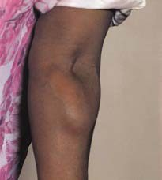
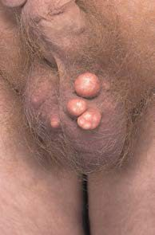
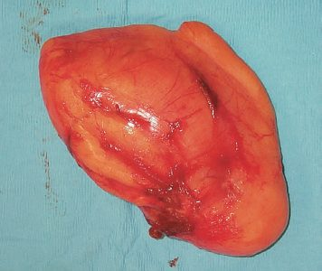
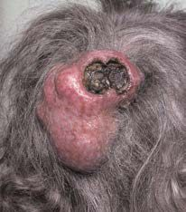

Lipoma and Sebaceous Cyst
Summary
- Lipomas and sebaceous (epidermal/pilar) cysts are the two commonest benign subcutaneous swellings encountered in surgical practice [1].
- A lipoma is a cluster of fat cells that have become overactive and enlarged into a palpable, lobulated lump; lipomas are never malignant, in contrast to liposarcomas, which arise de novo, most often in the retroperitoneum [1].
- Lipomas are the most common mesenchymal (soft tissue) tumour overall [2].
- Sebaceous cysts, more correctly termed epidermal or pilar/trichilemmal cysts depending on their origin, form when sebum accumulates behind a blocked gland or hair-follicle opening [1][3].
Definition
- A lipoma is a benign, encapsulated adipocytic tumour that can arise from any part of the body and is devoid of nodularity or thick internal septations [4].
- Epidermal cysts are lined with true stratified squamous epithelium derived from hair-follicle infundibuli or traumatic inclusion, and are commonly, if imprecisely, known as "sebaceous cysts" [3].
- Trichilemmal (pilar/pilosebaceous) cysts are derived from the epidermis of the external root sheath of the hair follicle, arise mostly in the scalp, and are usually distinguished from epidermal cysts only by histopathology rather than clinically [3].
- The skin is kept soft and oily by sebum secreted from sebaceous glands; when a gland's opening becomes blocked, it distends with its own secretion and ultimately becomes a sebaceous cyst [1].
Pathophysiology
- Lipomas are composed of mature, encapsulated fat and, when cut open, contain a soft but solid, jelly-like fat [1].
- They may arise within deep structures such as muscles, in which case they are fixed deeply and become more or less prominent with muscle contraction, whereas subcutaneous lipomas are not attached superficially or deeply and move freely in all directions [1].
- There can be a great deal of clinical and imaging overlap between a lipoma and a liposarcoma; features associated with liposarcoma rather than lipoma include tumour size >10 cm, thick (>2 mm) septa, presence of non-adipose areas, and lesions that are less than 75% adipose tissue on cross-sectional imaging [4].
- Well-differentiated and dedifferentiated liposarcomas can be distinguished from lipomas on the basis of MDM2 and CDK4 immunohistochemistry, reflecting amplification of chromosome 12q13-15 in the malignant lesions [4].
- A sebaceous/epidermal cyst forms when the opening of a sebaceous gland or hair follicle becomes blocked, the gland or follicle infundibulum distends with sebum and keratin debris, and a squamous-epithelium-lined sac forms beneath the skin; a slow discharge of sebum through a wide punctum can harden to form a "sebaceous horn," and neglected infection of the cyst wall and surrounding tissue produces a boggy, painful, discharging swelling known as "Cock's peculiar tumour" [1].
Clinical features
- Lipomas occur at all ages but are uncommon in children, grow slowly over months to years, and rarely regress; they are most common in the subcutaneous tissues of the upper limbs, chest, neck and shoulders but can occur anywhere [1].
- They are usually spherical or, when developing between skin and deep fascia, discoid/hemispherical, and are typically lobulated, lobules can be seen and felt at the surface and edge, becoming more prominent with firm palpation ("evidence of lobulation... is the most significant physical sign") [1].
- The edge is soft, compressible and slips away from the examining finger (the "slip sign"), and lipomas often give a false impression of fluctuation and can even seem to transilluminate, although fat at body temperature is solid, not liquid, and this appearance is a diagnostic trap [1].
- Lipomas are not usually tender, though angiolipomas are; overlying skin is normal and regional lymph nodes are not enlarged [1].
- Patients may have multiple lipomas, or multiple contiguous lipomas causing lipomatosis of the buttocks or neck; Dercum's disease (adiposis dolorosa) is multiple, often painful lipomas over the limbs and trunk, sometimes containing angiomatous elements [1][5].

- Sebaceous/epidermal cysts most often occur in hairy parts of the body (scalp, scrotum, neck, shoulders and back) as there are no sebaceous glands on the palms or soles; they are typically tense, spherical, well-defined, smooth-surfaced masses in subcutaneous fat, ranging from a few millimetres to 4–5 cm, and a dark punctum or pit may (or may not) be visible on the surface [1].
- They are slow-growing and often present for years before removal is requested, are often multiple, and are usually non-tender unless infected, at which point they enlarge rapidly and become acutely painful [1].
- Most sebaceous cysts feel hard and solid, occasionally too tense to elicit fluctuation, though fluctuation can be more easily detected on the scalp where the underlying skull provides resistance [1].
- They are fixed to the skin (in contrast to a lipoma) and usually have a central punctum [3].

Etiology
- Lipomas arise from overactive proliferation of mature adipocytes; the cause is not otherwise specified in the source texts beyond their being common, benign accumulations of fat, sometimes multiple/familial (lipomatosis, Dercum's disease) [1].
- Epidermal (sebaceous) cysts arise from blockage of a sebaceous gland duct or from traumatic implantation of epidermis into the dermis, while trichilemmal cysts arise from the external root sheath of hair follicles, which explains their predilection for the scalp (90% occur in the scalp, 70% are multiple) [3].
- Multiple epidermoid cysts and lipomata together can be a feature described in association with genetic tumour syndromes [3].
- Familial adenomatous polyposis (Gardner's syndrome variant) is associated with epidermoid cysts, osteomas and desmoid tumours as extracolonic manifestations [7].
Diagnosis
- Diagnosis of both lipoma and sebaceous cyst is primarily clinical, based on the history and examination findings described above.
- For a lipoma, the key differentiating clinical sign from a cyst is lobulation at the surface and edge, together with the false-positive impressions of fluctuation and transillumination that a soft, large lipoma can produce [1].
- Cross-sectional imaging (CT/MRI) is used when there is concern for a deep-seated or atypical fatty tumour, to help distinguish a benign lipoma from liposarcoma using features such as size, septation and non-adipose content described above [4].
- Dermoid and epidermoid cysts must be distinguished from one another: dermoid cysts are congenital variants resulting from persistent epithelium at embryonic lines of fusion (most commonly between the forehead and nose tip, or the eyebrow), can lie in the subcutaneous tissue or intracranially, and often communicate with the skin via a small fistula, containing epithelial tissue, hair and epidermal appendages, whereas epidermoid cysts typically contain only epidermal tissue and keratin debris [8][9].
The examination of a lump, and the two traps a lipoma sets
- Because a lipoma is diagnosed clinically, the value of this topic lies in the examination routine rather than in any investigation.
- Browse's sequence for any lump is fixed: site, size, shape, surface, depth, colour, temperature, tenderness, edge, then composition (consistency, fluctuation, fluid thrill, translucency, resonance, pulsatility, compressibility, bruit), then reducibility, relations to surrounding structures (mobility and fixity), regional lymph nodes, and finally the state of the local tissues, meaning the arteries, nerves, bones and joints [10].
- Working through it in order is what prevents the two errors that a lipoma characteristically produces.
- Trap one is fluctuation.
- Fluctuation depends on the physical fact that a rise in pressure inside a cavity is transmitted equally and at right angles to every part of its wall, so pressing one side of a fluid-filled lump makes all the other surfaces protrude; a solid lump may bulge in one other direction but not in every direction [10].
- It is elicited by holding two other areas of the lump between the thumb and index finger of one hand while pressing a third central point with the index finger of the other, and the test must be repeated in a second plane at right angles to the first [10].
- The reason a soft lipoma fools this test is stated directly: consistency depends not only on structure but on the tension within the lump, so some fluid-filled lumps feel hard and some solid lumps feel soft, and the final decision about whether a lump is fluid or solid rarely rests on consistency alone [10].
- Trap two is transillumination.
- A lump that transilluminates must contain water, serum, lymph or plasma, and blood and other opaque fluids do not transmit light, but highly refractile light can also appear to transilluminate through a large lipoma [10].
- The technique matters: transillumination needs a bright pinpoint light source and a darkened room, the light placed on one side of the lump, not directly on top of it, and the sign is present only when the whole lump glows at a distance from the light source [10].
- Two further parts of the routine discriminate usefully here.
- A fluid thrill is conducted across a large fluid collection but not across a solid mass, detected by flicking one side and feeling the transmitted vibration on the other; it is a diagnostic and extremely valuable sign when present, though a percussion wave can be transmitted along the wall of a large swelling, which is why the edge of an assistant's hand is placed midway between the percussing and palpating hands to block it [10].
- Percussion waves cannot be felt across small fluid-filled lumps at all, because the wave crosses too quickly for the time gap to be appreciated [10].
- And let your hand rest still for a few seconds on every lump to discover whether it is pulsating, distinguishing an expansile pulsation, where fingers on opposite sides are pushed outwards and upwards, from a transmitted one, where they are pushed only upwards [10].
Scoring and Severity
- There is no severity score for a lipoma or an epidermal cyst, and the textbooks record none.
- The scoring that matters is the one applied to the lesion a lipoma can be mistaken for. Soft tissue sarcoma is staged on grade, not size, and tumour grade is the most important prognostic factor, with undifferentiated tumours faring worst [2].
- The two commonest soft tissue sarcomas are malignant fibrous histiocytoma first and liposarcoma second, 50% arise in the extremities, and most are large, rapidly growing and painless, with an asymptomatic mass the commonest presentation [2].
The biopsy sequence is the practical consequence of that, and it is easy to get wrong once a "lipoma" turns out not to be one. MRI before biopsy excludes vascular, neural or bone invasion; core needle biopsy is the best first test at 95% accuracy; if it fails, use excisional biopsy for a mass under 4 cm and a longitudinal incisional biopsy for masses over 4 cm, placing the incision along the long axis plane of the future resection incision, because the biopsy skin site will itself have to be resected if sarcoma is confirmed [2]. Spread is haematogenous rather than lymphatic, so nodal metastasis is rare and the lung is the commonest metastatic site, which is why a chest radiograph is part of the workup [2].
Treatment and Management
Lipomas causing symptoms, cosmetic concern, or diagnostic uncertainty are treated by simple excision beyond the capsule of the tumour, which is curative because lipomas are benign and encapsulated; this contrasts with liposarcoma, which requires more complex resection with wide negative margins and multidisciplinary input [4]. Treatment of a sebaceous/epidermal cyst depends on its clinical state: when inflamed or infected, the cyst should be incised and drained initially, and removed later once inflammation and induration have subsided; it is important to excise the cyst wall in its entirety, as incomplete removal usually results in recurrence [3].
- There is no NICE guideline on lipomas or sebaceous cysts, and there does not need to be; what NICE defines instead is the single circumstance in which a "simple lump" must be investigated rather than reassured about.
- For adults, consider an urgent, direct access ultrasound scan to assess for soft tissue sarcoma in anyone with an unexplained lump that is increasing in size [11].
- If the ultrasound findings suggest soft tissue sarcoma, or if they are uncertain and clinical concern persists, consider a suspected cancer pathway referral [11].
- That second clause is the safety net: an equivocal scan plus persisting clinical concern is itself a referral trigger.
For children and young people the same finding carries a shorter clock: consider a very urgent, direct access ultrasound scan for an unexplained lump that is increasing in size [11]. The corresponding bone-sarcoma rule follows the same pattern, with an X-ray suggesting bone sarcoma prompting a suspected cancer pathway referral in adults and a very urgent referral for an appointment within 48 hours in children and young people [11].
The practical consequence for this topic is a single question at the bedside. A soft, lobulated, freely mobile subcutaneous swelling that has been unchanged for years needs no imaging. A lump that is unexplained and enlarging is, by the UK pathway, a sarcoma question until an ultrasound says otherwise, regardless of how lipoma-like it feels, which aligns with the textbook features that separate a lipoma from a liposarcoma described above.
Surgeries
Simple surgical excision (including the capsule) is the definitive treatment for a symptomatic or enlarging lipoma [4]. For a sebaceous/epidermal cyst, elective excision of the cyst and its lining in its entirety is performed once any infection has settled, since failure to remove the entire cyst wall predisposes to recurrence; an acutely infected cyst is managed first with incision and drainage before interval excision [3].

Complications
- Infection is the main complication of a sebaceous/epidermal cyst: infected cysts enlarge rapidly, become acutely painful, and if neglected can progress to a boggy, discharging "Cock's peculiar tumour" from infection of the cyst wall and surrounding tissue [1].
- Incomplete excision of a sebaceous/epidermal cyst, leaving residual cyst wall, is the principal cause of recurrence [3].
- For lipomas, the main clinical concern is misdiagnosis of an atypical lipomatous tumour or liposarcoma as a simple lipoma, particularly for large (>10 cm), deep-seated or septated fatty masses [4].

Prognosis
Lipomas are benign and excision is curative; they are "never malignant," although liposarcoma is a distinct, separate entity that can mimic a lipoma clinically and radiologically and carries a very different prognosis depending on histological subtype (well-differentiated/dedifferentiated versus myxoid/round cell versus pleomorphic) [1][4]. Sebaceous/epidermal cysts have an excellent prognosis after complete excision; recurrence is related specifically to incomplete removal of the cyst wall rather than to any malignant potential of the lesion itself [3].
References
- Browse's Introduction to the Symptoms and Signs of Surgical Disease, 6th ed., Ch. 4 The skin and subcutaneous tissues
- The ABSITE Review, 2022, Ch. 18 Plastics, Skin, and Soft Tissues
- Bailey & Love's Short Practice of Surgery, 28th ed., Ch. 45 Skin and subcutaneous tissue
- Sabiston Textbook of Surgery, 22nd ed., Ch. 64 Sarcomas of the Soft Tissues, Retroperitoneum, and Bone
- Oxford Handbook of Clinical Surgery, 5th ed., Ch. 3 Surgical pathology
- Browse's Introduction to the Symptoms and Signs of Surgical Disease, 6th ed., Ch. 18
- Sabiston Textbook of Surgery, 22nd ed., Ch. 95 Colon and Rectum
- Schwartz's Principles of Surgery: ABSITE and Board Review, Ch. 16 The Skin and Subcutaneous Tissue
- Sabiston Textbook of Surgery, 22nd ed., Ch. 117 Pediatric Surgery
- Browse's Introduction to the Symptoms and Signs of Surgical Disease, 6th ed., Ch. 1 History and examination
- NICE Guideline NG12: Suspected cancer: recognition and referral (2015, updated 2026), 1.11.1; 1.11.2; 1.11.4; 1.11.5; 1.11.6 www.nice.org.uk
- Bailey & Love's Short Practice of Surgery, 28th ed., Ch. 42